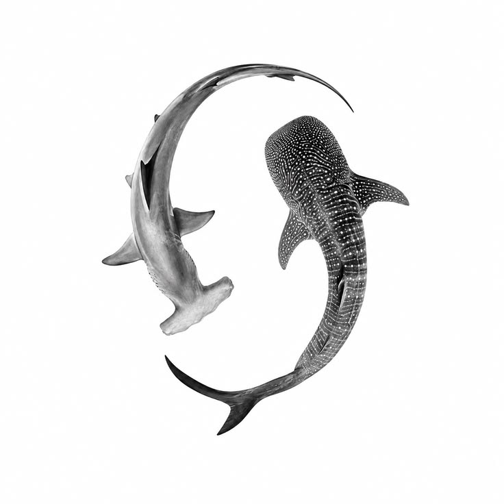

Ejercicio 9: secuencia de imágenes
RA1 – CE 1.a · Manipulación de atributos de los elementos del DOM
(src) y persistencia de estado con una variable de ámbito superior.
Enunciado
Crear una secuencia cíclica de al menos 4 imágenes fotograma a fotograma. Al hacer clic
sobre la imagen, el script comprueba cuál se está visualizando (mediante una condición o
extrayendo un contador de un array) y reasigna el atributo .src para
mostrar la siguiente.
Secuencia

Fotograma 1 de 4 imagen.src = "img/frame1.jpg"
Código del fichero externo ./js/ej9_secuencia.js
const FOTOGRAMAS = [
"img/frame1.jpg",
"img/frame2.jpg",
"img/frame3.jpg",
"img/frame4.jpg"
];
// FUERA de la funcion: debe conservar el valor entre pulsaciones
let indiceActual = 0;
function avanzarFotograma() {
const imagen = document.getElementById("imagenSecuencia");
indiceActual++;
if (indiceActual === FOTOGRAMAS.length) {
indiceActual = 0; // vuelta al principio: la secuencia es ciclica
}
imagen.src = FOTOGRAMAS[indiceActual];
}Los dos detalles que hacen que funcione
1. El contador va fuera de la función
Si indiceActual se declarase dentro de
avanzarFotograma(), se crearía una variable nueva en cada llamada que
valdría siempre 1, la condición nunca se cumpliría y la imagen se quedaría
congelada. Al declararlo en el ámbito superior del script, conserva
su valor entre invocaciones: eso es lo que se llama estado del programa.
2. La condición de reinicio
Al incrementar el índice hay que comprobar si ha superado la última posición del
Array. Como los índices van de 0 a length - 1, cuando
indiceActual llega a FOTOGRAMAS.length se reinicia a 0 y
la secuencia vuelve a empezar por la primera imagen.
Un Array en JavaScript empieza siempre en la posición 0,
igual que los meses del objeto Date, así que el fotograma
"1 de 4" se corresponde con el índice 0.
Diferencia con los apuntes originales
La versión de los apuntes usaba el atributo onclick asignado como
propiedad del elemento (imagen.onclick = function () {...}) y declaraba
las variables con var. Aquí se ha modernizado a
addEventListener() y a const/let, que son las
formas recomendadas actualmente.
<!-- Apuntes: propiedad del elemento, var -->
var contador = 0;
imagen.onclick = function () {
contador++;
if (contador == fotogramas.length) { contador = 0; }
imagen.src = fotogramas[contador];
};
<!-- Versión actual: addEventListener, const y let -->
let indiceActual = 0;
imagen.addEventListener("click", avanzarFotograma);
Con == la comparación no distingue entre tipos; lo correcto en JavaScript
moderno es usar siempre === (igualdad estricta) y
!== para la desigualdad.